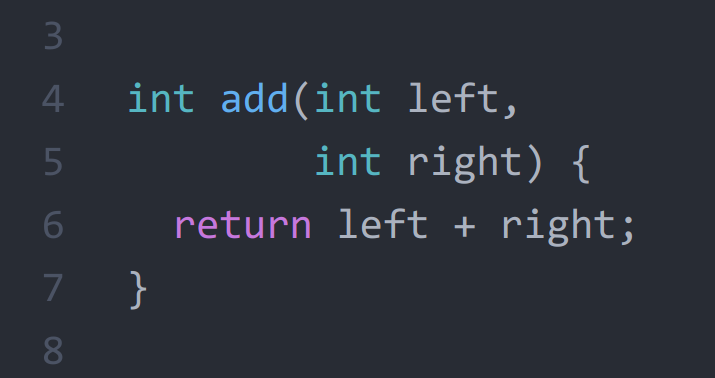
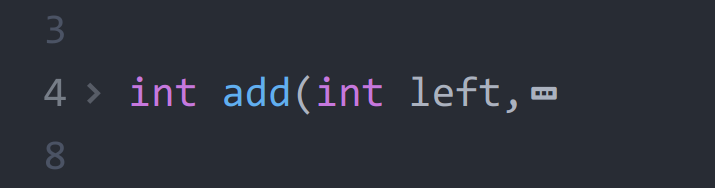
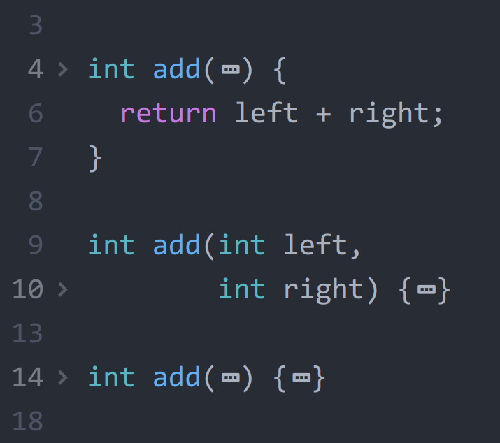

Atom 1.25

Atom 1.25 has been released on our stable channel and includes GitHub package improvements, improved syntax highlighting and code folding, Python and HTML language improvements and more.
GitHub package
The GitHub package allows you to stage and view changes involving file mode changes and changes to symbolic links. Furthermore, the diff view no longer resets its scrolling position when you don’t want it to.
There is also a new configuration setting that controls whether or not commit messages composed within the mini editor are hard-wrapped to 72 columns. Commit messages composed in a full-pane editor continue to be preserved as-is.
Python and HTML language improvements
The Python and HTML language packages got some love in this release. When editing Python source, the tokenizer now supports function annotations, async functions, string formatting, f-strings, and binary strings. Within HTML documents, style attributes are tokenized as CSS.
Performance and responsiveness
The atom --wait command will now open files in existing Atom windows. This makes Atom more useful for tasks like editing commit messages, where the editor must block until a file is closed. Try using atom--wait as your GIT_EDITOR today!
“Confirm” and “save” dialogs launched with the Atom API may now be asynchronous. Internal callers have been updated, but note that package authors will need to opt-in to the asynchronous forms of both by providing callback arguments.
// Asynchronous atom.confirm()
atom.confirm({
message: 'Click yes to win',
buttons: ['Yes', 'No']
}, response => {
if (response === 0) {
console.log('YOU WIN!')
} else {
console.log("Well well aren't we contrary")
}
})
// Asynchronous showSaveDialog()
atom.getCurrentWindow().showSaveDialog({
title: 'Save File',
defaultPath: process.cwd()
}, chosenPath => {
console.log(`Successfully saved to ${chosenPath}.`)
})
Improved syntax highlighting and code folding
Syntax highlighting and code folding is about to be revamped substantially. A brand-new incremental parsing system called tree-sitter has been in development for some time, and it’s available for testing in stable today. Tree-sitter grammars exist for JavaScript, TypeScript, Python, C, C++, Go, and Bash.
Tree-sitter is currently disabled by default. If you want to give it a shot, enable the “Use Tree Sitter Parsers” setting in Atom’s core settings.
To give a taste of what’s possible with tree-sitter grammars, code folds are currently based entirely on indentation. It’s a decent heuristic, but falls apart in more complex situations. Consider this function signature:

This code does not fold as you would expect when using indentation as a guide:

With tree-sitter, folds follow the syntax:

As another example, tree-sitter lets you expand and contract selections by syntax nodes:

We are hoping to stabilize this feature so that it can be turned on by default in the future. Please help us by trying it out and file issues for any problems you encounter.
Electron upgrade
Electron has been upgraded to 1.7.11, bringing in new improvements for Atom users:
- OneDrive users on Windows can now use its “files on demand” feature in Atom
- Subpixel font rendering has been fixed for FreeType on Linux
- A litany of stability, performance, and security improvements
Check out the Electron release notes between 1.6.16 and 1.7.11 for more information.
Don’t forget to check out all the other improvements shipping with this version in the release notes! 
Atom 1.26 Beta

GitHub package improvements
The GitHub package’s Git pane now displays a list of recent commits for quick reference:

This list is read-only for now but will become more interactive in future releases.
The Git authentication dialog also gained a “Remember” checkbox to enable you to store your username and password:

Your credentials are saved securely in your operating system’s credential store so that they can be used for future Git operations.
Fuzzy-finder support for Teletype
When you’re coding together with Teletype, you can now use the fuzzy-finder to quickly open any file shared by the host.

Atom’s fuzzy-finder is your one-stop shop for lightning-fast access to the local files and the remote files in your workspace.
File system watcher improvements
Our file system watchers will now fall back to polling if the operating system is unable to watch for events. You can manually force watching to be done through polling by setting “File System Watcher” to “Polling” if the detection fails, which may be necessary on certain kinds of remotely mounted drives.
We’ve also added an experimental file system watcher to lower resource consumption, improve scalability when watching many directories, and achieve greater parity with the information available from the operating system. Please give it a try by changing the core “File System Watcher” setting to “Experimental”.
There are many more details in the release notes.
Get all these improvements today by joining the Atom Beta Channel!
P.S. Our landing page got a fresh coat of paint with highlights from the past year. Check it out at atom.io.